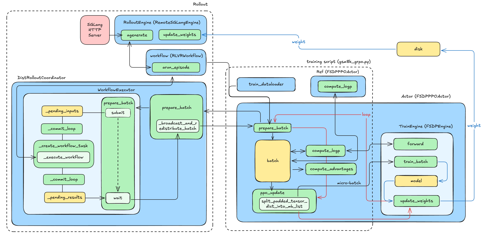

Code Walkthrough of AReaL
As early as the beginning of 2025, a senior expert in the infrastructure circle praised AReaL's code as the most artistic in the entire community. Taking advantage of AReaL's several major version releases in 2025, as well as the release of related framework works such as asystem-amem, our SGLang RL team would like to share these study notes on AReaL with everyone.
It is worth noting that Professor Yi Wu is an experienced yet young leading scientist in the RL field (for Professor Wu, being young and experienced is not contradictory 😂). AReaL's design in asynchronous training can be considered top-tier in the industry, and this will also be the part we focus on learning.
Start from Example
Let's start learning AReaL's workflow with a simple example (examples/math/gsm8k_grpo.py):

Code of main() in gsm8k_grpo.py
def main(args):
config, _ = load_expr_config(args, GRPOConfig)
rank = int(os.getenv("RANK"))
tokenizer = load_hf_tokenizer(config.tokenizer_path)
seeding.set_random_seed(config.seed, key=f"trainer{rank}")
allocation_mode = AllocationMode.from_str(config.allocation_mode)
parallel_strategy = allocation_mode.train
assert parallel_strategy is not None
# Initialize train engine
actor = FSDPPPOActor(config=config.actor)
actor.create_process_group(parallel_strategy=parallel_strategy)
# Create dataset and dataloaders
train_dataset = get_custom_dataset(
split="train", dataset_config=config.train_dataset, tokenizer=tokenizer
)
valid_dataset = get_custom_dataset(
split="test", dataset_config=config.valid_dataset, tokenizer=tokenizer
)
train_dataloader = create_dataloader(
train_dataset,
rank=actor.data_parallel_rank,
world_size=actor.data_parallel_world_size,
dataset_config=config.train_dataset,
)
valid_dataloader = create_dataloader(
valid_dataset,
rank=actor.data_parallel_rank,
world_size=actor.data_parallel_world_size,
dataset_config=config.valid_dataset,
)
ft_spec = FinetuneSpec(
total_train_epochs=config.total_train_epochs,
dataset_size=len(train_dataloader) * config.train_dataset.batch_size,
train_batch_size=config.train_dataset.batch_size,
)
# Initialize inference engine
rollout = RemoteSGLangEngine(config.rollout)
rollout.initialize(train_data_parallel_size=parallel_strategy.dp_size)
eval_rollout = RemoteSGLangEngine(deepcopy(config.rollout))
# NOTE: eval does not have any offpolicyness control
eval_rollout.config.max_head_offpolicyness = int(1e12)
eval_rollout.initialize()
weight_update_meta = WeightUpdateMeta.from_fsdp_xccl(allocation_mode)
actor.initialize(None, ft_spec)
actor.connect_engine(rollout, weight_update_meta)
ref = None
if config.actor.kl_ctl > 0 and config.ref is not None:
ref = FSDPPPOActor(config=config.ref)
ref.create_process_group(parallel_strategy=parallel_strategy)
ref.initialize(None, ft_spec)
# Create rollout workflow
if tokenizer.pad_token_id not in config.gconfig.stop_token_ids:
config.gconfig.stop_token_ids.append(tokenizer.pad_token_id)
if tokenizer.eos_token_id not in config.gconfig.stop_token_ids:
config.gconfig.stop_token_ids.append(tokenizer.eos_token_id)
workflow = RLVRWorkflow(
reward_fn=gsm8k_reward_fn,
gconfig=config.gconfig,
tokenizer=tokenizer,
enable_thinking=False,
dump_dir=os.path.join(
StatsLogger.get_log_path(config.stats_logger), "generated"
),
)
eval_workflow = RLVRWorkflow(
reward_fn=gsm8k_reward_fn,
gconfig=config.gconfig.new(temperature=0.6),
tokenizer=tokenizer,
enable_thinking=False,
rollout_stat_scope="eval-rollout",
dump_dir=os.path.join(
StatsLogger.get_log_path(config.stats_logger), "generated-eval"
),
)
# Run training.
saver = Saver(config.saver, ft_spec)
stats_logger = StatsLogger(config, ft_spec)
evaluator = Evaluator(config.evaluator, ft_spec)
recover_handler = RecoverHandler(config.recover, ft_spec)
recover_info = recover_handler.load(
actor,
saver,
evaluator,
stats_logger,
train_dataloader,
inference_engine=rollout,
weight_update_meta=weight_update_meta,
)
start_step = (
recover_info.last_step_info.next().global_step
if recover_info is not None
else 0
)
total_epochs = config.total_train_epochs
steps_per_epoch = len(train_dataloader)
max_steps = total_epochs * steps_per_epoch
for global_step in range(start_step, max_steps):
epoch = global_step // steps_per_epoch
step = global_step % steps_per_epoch
step_info = StepInfo(
global_step=global_step,
epoch=epoch,
epoch_step=step,
steps_per_epoch=steps_per_epoch,
)
with stats_tracker.record_timing("rollout"):
batch = actor.prepare_batch(
train_dataloader,
granularity=actor.config.group_size,
workflow=workflow,
should_accept_fn=lambda sample: True,
)
if config.actor.recompute_logprob or config.actor.use_decoupled_loss:
with stats_tracker.record_timing("recompute_logp"):
logp = actor.compute_logp(batch)
batch["prox_logp"] = logp
log_gpu_stats("recompute logp")
if ref is not None:
with stats_tracker.record_timing("ref_logp"):
batch["ref_logp"] = ref.compute_logp(batch)
log_gpu_stats("ref logp")
with stats_tracker.record_timing("compute_advantage"):
actor.compute_advantages(batch)
log_gpu_stats("compute advantages")
with stats_tracker.record_timing("train_step"):
actor.ppo_update(batch)
actor.step_lr_scheduler()
log_gpu_stats("ppo update")
# pause inference for updating weights, save, and evaluation
rollout.pause()
with stats_tracker.record_timing("update_weights"):
actor.update_weights(weight_update_meta)
actor.set_version(global_step + 1)
rollout.set_version(global_step + 1)
eval_rollout.set_version(global_step + 1)
with stats_tracker.record_timing("save"):
saver.save(actor, epoch, step, global_step, tokenizer=tokenizer)
with stats_tracker.record_timing("checkpoint_for_recover"):
recover_handler.dump(
actor,
step_info,
saver,
evaluator,
stats_logger,
train_dataloader,
tokenizer=tokenizer,
)
current_platform.synchronize()
dist.barrier(group=actor.cpu_group)
with stats_tracker.record_timing("eval"):
def evaluate_fn():
if actor.is_data_parallel_head():
cnt = 0
for data in valid_dataloader:
for item in data:
eval_rollout.submit(item, eval_workflow)
cnt += 1
eval_rollout.wait(cnt, timeout=None)
current_platform.synchronize()
dist.barrier(group=actor.cpu_group)
evaluator.evaluate(
evaluate_fn,
epoch,
step,
global_step,
)
current_platform.synchronize()
dist.barrier(group=actor.cpu_group)
# Upload statistics to the logger (e.g., wandb)
stats = stats_tracker.export_all(reduce_group=actor.data_parallel_group)
stats_logger.commit(epoch, step, global_step, stats)
current_platform.synchronize()
dist.barrier(group=actor.cpu_group)
# Resume rollout
rollout.resume()
stats_logger.close()
eval_rollout.destroy()
rollout.destroy()
if ref is not None:
ref.destroy()
actor.destroy()
Init
Initialize the Train Engine (e.g., FSDPPPOActor), Inference Engine (e.g., RemoteSGLangEngine), and optional Reference Engine, load the dataset (DataLoader), and establish the channel for the Actor to transmit weights to the Rollout Engine through weight_update_meta.
Create Rollout Workflow. The diagram above uses the most basic RLVRWorkflow. AReaL also provides MultiTurnWorkflow, supporting complex multi-turn dialogue RL tasks. They are all implementations of the abstract class RolloutWorkflow (AReaL/areal/api/workflow_api.py). These implementations of RolloutWorkflow unify the generation interface. When calling the workflow for generation, there is no need to care about specific interaction details; just call workflow.arun_episode() to get a batch of Trajectories containing standard training fields.
Rollout
The Actor calls prepare_batch to request the trajectories generated by the rollout. The call path for this part is FSDPPPOACTOR.prepare_batch → DistRolloutCoordinator.prepare_batch → RemoteInfEngine.prepare_batch → WorkflowExecutor.prepare_batch. Here, prepare_batch of WorkflowExecutor triggers an asynchronous Producer-Consumer pipeline.
[!TIP] Producer-Consumer
The Producer-Consumer Pattern is a classic concurrency design pattern used to solve the data transmission problem between two components with inconsistent processing rates.
- Core Idea: The Producer and Consumer do not communicate directly but decouple through a Buffer/Queue.
- Producer: Responsible for generating data and putting it into the buffer. If the buffer is full, the producer must wait or discard data.
- Consumer: Responsible for taking data from the buffer for processing. If the buffer is empty, the consumer must wait.
- Buffer: Smooths out fluctuations in production and consumption rates, allowing both to work in parallel without blocking each other.
The figure below shows the interaction and data flow during the rollout process.
sequenceDiagram
autonumber
participant User as Main Thread (Train Loop)
participant Executor as WorkflowExecutor
participant Producer as Producer Thread (_commit_loop)
participant Runner as AsyncTaskRunner
participant Workflow as RolloutWorkflow (e.g. MathWorkflow)
participant Engine as RemoteSGLangEngine
participant SGLang as SGLang Server (HTTP)
User->>Executor: prepare_batch(dataloader)
Executor->>Executor: submit(data) -> Enqueue to _pending_inputs
loop Producer Thread
Producer->>Executor: Check Staleness & Capacity
Producer->>Runner: submit(task) if allowed
end
loop AsyncTaskRunner (Worker)
Runner->>Workflow: arun_episode(engine, data)
activate Workflow
Workflow->>Engine: agenerate(prompts)
activate Engine
Engine->>SGLang: HTTP POST /generate
SGLang-->>Engine: Response (Text)
Engine-->>Workflow: Interaction Objects
deactivate Engine
Workflow->>Workflow: Compute Rewards (Local or API)
Workflow->>Workflow: Pack Trajectory (Tensors)
Workflow-->>Runner: Return Trajectory
deactivate Workflow
end
loop Consumer Thread
Runner->>Executor: Fetch Result -> _pending_results
end
Executor->>User: wait() -> Returns Batch of Trajectories
Let's further understand the key classes mentioned in the diagram above.
RolloutWorkflow
RolloutWorkflow is located in areal/api/workflow_api.py, which is the core abstraction defining Agent behavior in AReaL (defined in areal/api/workflow_api.py).
Abstract Class RolloutWorkflow Code (AReaL/areal/api/workflow_api.py)
class RolloutWorkflow(ABC):
@abstractmethod
async def arun_episode(
self, engine: InferenceEngine, data: dict[str, Any]
) -> dict[str, Any] | None | dict[str, InteractionWithTokenLogpReward]:
raise NotImplementedError()
From this code, we can see that all concrete implementations of RolloutWorkflow (such as RLVRWorkflow, MultiTurnWorkflow, located in areal/workflow/) must implement this core asynchronous function arun_episode(). Next, we take RLVRWorkflow as an example to analyze what the specific implementation of RolloutWorkflow looks like.
In init, besides necessary rollout parameters, reward_fn is also input, and reward calculation is included in the workflow.
RLVRWorkflow.init
class RLVRWorkflow(RolloutWorkflow):
"""Single-turn reward learning workflow supporting optional thinking tokens."""
def __init__(
self,
reward_fn: Callable[..., Any],
gconfig: GenerationHyperparameters,
tokenizer: PreTrainedTokenizerFast,
enable_thinking: bool = False,
rollout_stat_scope: str = "rollout",
dump_dir: str | None = None,
get_input_ids_fn: Callable[
[Any, PreTrainedTokenizerFast, bool], list[int]
] = default_get_input_ids_fn,
data_extract_prompt_fn: Callable[
[dict[str, Any]], Any
] = default_data_extract_prompt_fn,
):
self.reward_fn = reward_fn
self.gconfig = gconfig
self.tokenizer = tokenizer
self.enable_thinking = enable_thinking
self.dump_dir = dump_dir
self.rollout_stat_scope = rollout_stat_scope
self.async_reward_fn = AsyncRewardWrapper(reward_fn)
self.get_input_ids_fn = get_input_ids_fn
self.data_extract_prompt_fn = data_extract_prompt_fn
if self.dump_dir is not None and not os.path.exists(self.dump_dir):
os.makedirs(self.dump_dir, exist_ok=True)
arun_episode() serves as a unified entry point for the outside world. It receives InferenceEngine and input data data, and is responsible for executing a complete rollout process, including:
Prompt construction and preprocessing, concurrent sampling, reward calculation, and final Trajectory assembly and return.
RLVRWorkflow.arun_episode()
async def arun_episode(
self, engine: InferenceEngine, data: dict[str, Any]
) -> dict[str, torch.Tensor]:
...
version = engine.get_version()
prompt_str = self.tokenizer.decode(input_ids)
prompt_strs = [prompt_str] * n_samples
# Generate responses and collect rewards
sample_results = await asyncio.gather(
*[
self._collect_samples(engine, req, prompt_str, data)
for _ in range(n_samples)
]
)
if sample_results:
resps, rewards, completions_strs = map(list, zip(*sample_results))
else:
resps, rewards, completions_strs = [], [], []
# Build result tensors
results = []
for resp, reward in zip(resps, rewards):
seq = resp.input_tokens + resp.output_tokens
logprobs = [0.0] * resp.input_len + resp.output_logprobs
loss_mask = [0] * resp.input_len + [1] * resp.output_len
versions = [-1] * resp.input_len + resp.output_versions
res = {
"input_ids": torch.tensor(seq, dtype=torch.int32),
"loss_mask": torch.tensor(loss_mask, dtype=torch.int32),
"logprobs": torch.tensor(logprobs, dtype=torch.float32),
"versions": torch.tensor(versions, dtype=torch.int32),
"attention_mask": torch.ones(len(seq), dtype=torch.bool),
"rewards": torch.tensor(reward, dtype=torch.float32),
}
res = {k: v.unsqueeze(0) for k, v in res.items()}
results.append(res)
...
return concat_padded_tensors(results)
arun_episode() internally calls _collect_samples() for sampling and reward calculation, and _collect_samples() further calls agenerate() of the inference engine, which is the interface that actually triggers model inference.
RLVRWorkflow._collect_samples()
async def _collect_samples(
self,
engine: InferenceEngine,
req: ModelRequest,
prompt_str: str,
task_data: dict[str, Any],
) -> tuple[ModelResponse, float, str]:
async with atrace_session_phase("generate"):
resp = await engine.agenerate(req)
reward, completions_str = await self._compute_rewards(
resp, prompt_str, task_data
)
stats_tracker.get(self.rollout_stat_scope).scalar(reward=reward)
return resp, reward, completions_str
WorkflowExecutor
WorkflowExecutor is located in areal/core/workflow_executor.py. It is the component in the AReaL framework responsible for coordinating asynchronous scheduling and concurrency control between the training process and remote inference services. It encapsulates the Producer-Consumer thread model, and its internal structure is as follows:
prepare_batch(): Encapsulates submit() and wait(), taking input data / prompts as input and outputting the results.
prepare_batch() Code
def prepare_batch(
self,
dataloader: StatefulDataLoader,
workflow: RolloutWorkflow | type[RolloutWorkflow] | str,
workflow_kwargs: dict[str, Any] | None = None,
should_accept_fn: Callable[[dict[str, Any]], bool] | str | None = None,
):
manager = self.staleness_manager
if not hasattr(self, "data_generator"):
self.data_generator = cycle_dataloader(dataloader)
assert dataloader.batch_size is not None
cnt = 0
results = []
while True:
# Submit at least two batches to allow maximum overlap
if (
len(self._pending_inputs) < manager.get_pending_limit()
and self.runner.get_input_queue_size() + dataloader.batch_size
< self.runner.max_queue_size
):
data = next(self.data_generator)
perf_tracer.instant(
"workflow_executor.prepare_batch",
category="scheduler",
args={"data": len(data)},
)
for item in data:
self.submit(
item,
workflow=workflow,
should_accept_fn=should_accept_fn,
workflow_kwargs=workflow_kwargs,
)
try:
res = self.wait(count=1, timeout=1)
if not res:
continue
cnt += 1
results.append(res)
if cnt >= dataloader.batch_size:
break
except (TimeoutError, queue.Full):
pass
return concat_padded_tensors(results)
Main thread: The main thread does not involve generation or control, but simply adds tasks to the queue and outputs results. submit() adds tasks to the _pending_inputs queue, and wait() polls the _pending_results queue:
submit() and wait() Code
def submit(
self,
data: dict[str, Any],
workflow: RolloutWorkflow | type[RolloutWorkflow] | str,
workflow_kwargs: dict[str, Any] | None = None,
should_accept_fn: Callable[[dict[str, Any]], bool] | str | None = None,
) -> None:
...
# Resolve workflow and should_accept to their concrete forms
resolved_workflow = self._resolve_workflow(workflow, workflow_kwargs)
resolved_should_accept_fn = self._resolve_should_accept_fn(should_accept_fn)
task_id = perf_tracer.register_task()
task_input = _RolloutTaskInput(
data=data,
workflow=resolved_workflow,
should_accept_fn=resolved_should_accept_fn,
task_id=task_id,
)
# Enqueue to thread-safe queue (may block if queue is full)
self._pending_inputs.append(task_input)
# Notify staleness manager of enqueued rollout tasks
self.staleness_manager.on_rollout_enqueued()
...
def wait(
self, count: int, timeout: float | None = None, raise_timeout: bool = True
) -> dict[str, Any]:
...
# Drain all available requests and sort them by time of creation
# This prioritizes data submitted earlier.
results: list[TimedResult[_RolloutResult]] = []
while True:
try:
results.append(self._pending_results.popleft())
except IndexError:
break
# Sort results be create time
results.sort(key=lambda x: x.create_time)
results, pending = results[:count], results[count:]
self._pending_results.extendleft(reversed(pending))
# Shuffle for randomness (helps with data diversity)
random.shuffle(results)
# Concatenate into batch tensor format
trajectories = [r.data.trajectory for r in results if r.data is not None]
return concat_padded_tensors(trajectories)
Producer thread (_commit_loop): Determines the number of tasks that can be submitted in this round based on the available capacity returned by StalenessManager.get_capacity(), takes the corresponding number of tasks from _pending_inputs, and hands them over to AsyncTaskRunner to execute the generation process.
_commit_loop() Code
def _commit_loop(self) -> None:
while not self._shutdown_event.is_set():
try:
...
# Get capacity from staleness manager
version = self.inference_engine.get_version()
capacity = self.staleness_manager.get_capacity(version)
if capacity <= 0:
time.sleep(_POLL_INTERVAL_SECONDS)
continue
# Try to submit up to 'capacity' tasks
for _ in range(capacity):
try:
task = self._pending_inputs.popleft()
except IndexError:
break
# Submit to runner (may raise TaskQueueFullError)
workflow_fn = self._create_workflow_task(task)
try:
self.runner.submit(workflow_fn)
self.staleness_manager.on_rollout_submitted()
if self.config.enable_rollout_tracing:
self.logger.info(f"Submit rollout. {self._rollout_stats()}")
except TaskQueueFullError:
# Put back and retry later
self._pending_inputs.appendleft(task)
break
...
Consumer thread (_fetch_loop): Collects results from AsyncTaskRunner and stores them in _pending_results.
_fetch_loop() Code
def _fetch_loop(self) -> None:
"""Consumer thread main loop - continuously collects results from runner.
This method runs in a background thread and continuously:
1. Checks for errors from other threads (fail-fast)
2. Polls AsyncTaskRunner for available results (non-blocking)
3. Collects results in batches up to 100 with short timeout (0.05s)
4. Filters out None (rejected) results
5. Appends accepted TimedResult objects to _pending_results deque
The loop exits when _shutdown_event is set. Polling interval: 0.5s.
"""
while not self._shutdown_event.is_set():
try:
# Check for errors from other threads (fail-fast)
self._check_thread_exception()
# Poll runner for available results (non-blocking)
output_queue_size = self.runner.get_output_queue_size()
if output_queue_size == 0:
time.sleep(_POLL_INTERVAL_SECONDS)
continue
# Collect all available results at once (batch for efficiency)
# Limit batch size to avoid blocking too long
count = min(output_queue_size, _MAX_FETCH_BATCH_SIZE)
try:
# Use short timeout for responsiveness (latency-optimized)
results = self.runner.wait(
count=count, timeout=0.05, with_timing=True
)
# Enqueue all results. Filtering will be delayed to
# `rollout_batch` or `prepare_batch`.
for result in results:
self._pending_results.append(result)
except TimeoutError:
# No results ready yet
pass
# Small sleep to avoid busy-waiting (latency-optimized)
time.sleep(_POLL_INTERVAL_SECONDS)
except Exception as e:
self.logger.error("Consumer thread failed", exc_info=True)
self._set_thread_exception(e)
break
AsyncTaskRunner: A generic asynchronous executor inside WorkflowExecutor, responsible for managing the Event Loop in a background thread and concurrently executing high-density network I/O tasks (i.e., calling agenerate of the Inference Engine).
AsyncTaskRunner Code
async def _run_async_loop(self):
"""Main async event loop that processes tasks.
This loop:
1. Pulls tasks from input_queue when not paused
2. Creates asyncio.Task instances for each
3. Waits for task completion
4. Places results in output_queue
5. Continues until exiting signal is set
"""
running_tasks: dict[str, _Task[T]] = {}
task_id = 0
try:
while not self.exiting.is_set():
# 1. Pull new tasks from input queue
while not self.paused.is_set() and self.input_queue.qsize() > 0:
try:
task_input = self.input_queue.get_nowait()
# 2. Create asyncio task (This is where execution starts)
async_task = asyncio.create_task(
task_input.async_fn(*task_input.args, **task_input.kwargs),
name=str(task_id),
)
# Store task with metadata
running_tasks[str(task_id)] = _Task(
create_time=time.monotonic_ns(),
task=async_task,
task_input=task_input,
)
task_id += 1
except queue.Empty:
break
# 3. Wait for any task to complete
done = []
if running_tasks:
tasks = [t.task for t in running_tasks.values()]
done, _ = await asyncio.wait(
tasks,
timeout=self.poll_wait_time,
return_when=asyncio.FIRST_COMPLETED,
)
# 4. Process completed tasks and output results
for async_task in done:
tid = async_task.get_name()
task_obj = running_tasks.pop(tid)
try:
result = await async_task
# Place result in output queue
self.output_queue.put_nowait(
TimedResult(create_time=task_obj.create_time, data=result)
)
except Exception as e:
# Error handling...
pass
# Sleep to avoid busy-waiting
await asyncio.sleep(self.poll_sleep_time)
StalenessManager
StalenessManager is located in areal/core/staleness_manager.py. It uses two constraints (concurrency limit + staleness limit) to calculate how many new rollouts can be accepted. It is controlled by three parameters:
max_concurrent_rollouts: Limits the concurrency upper bound, i.e., the maximum number of running generation tasks.consumer_batch_size: Consumer batch size, i.e., the batch size of trainer training.max_staleness: The maximum allowed version difference between samples and the current model version.
init Code
class StalenessManager:
def __init__(
self,
max_concurrent_rollouts: int,
consumer_batch_size: int,
max_staleness: int,
):
self.max_concurrent_rollouts = max_concurrent_rollouts
self.consumer_batch_size = consumer_batch_size
self.max_staleness = max_staleness
# Thread-safe access to rollout statistics
self.lock = Lock()
self.rollout_stat = RolloutStat()
The core algorithm is located in get_capacity(), and the formula is as follows:
max_samples = (max_staleness + current_version + 1) * consumer_batch_size
capacity = min(concurrency_limit, max_samples - current_samples)
Here is my understanding of this formula: When the current weight version is current_version, we not only need to serve the current trainer but also prepare data in advance for the trainer up to max_staleness versions in the future (i.e., versions from current_version to current_version + max_staleness). Since the trainer consumes consumer_batch_size samples per version, theoretically, the maximum total number of samples that can be safely consumed from version 0 up to current_version + max_staleness is:
max_samples = (max_staleness + current_version + 1) * consumer_batch_size
The number of samples already accumulated in the current system is denoted as current_samples (including accepted and running rollouts). So, under the premise of not letting future samples "expire", the number of samples that can still be generated now is:
staleness_capacity = max_samples - current_samples
In other words, max_staleness controls "that these samples remain unexpired when moving forward up to max_staleness versions from now", and the formula indirectly guarantees this by limiting the total number of samples.
After understanding the staleness algorithm, the code becomes very clear. First, calculate the capacity margin under the concurrency limit, then calculate the capacity margin under the staleness limit, and take the minimum of the two as the true capacity margin.
get_capacity() Code
def get_capacity(self, current_version: int) -> int:
with self.lock:
# Calculate concurrency-based capacity
max_concurrent_rollouts = max(1, self.max_concurrent_rollouts)
concurrency_capacity = max_concurrent_rollouts - self.rollout_stat.running
# Calculate staleness-based capacity
ofp = self.max_staleness
sample_cnt = self.rollout_stat.accepted + self.rollout_stat.running
consumer_bs = max(1, self.consumer_batch_size)
staleness_capacity = (ofp + current_version + 1) * consumer_bs - sample_cnt
# Return the minimum of both constraints
capacity = min(concurrency_capacity, staleness_capacity)
return capacity
DistRolloutCoordinator
DistRolloutCoordinator implements a data coordinator in distributed training. Its core function is to ensure that the total number of tokens received by each Data Parallel Rank (GPU) is as consistent as possible in a distributed environment, solving the load imbalance problem caused by varying lengths of generated sequences. If data is distributed directly on average, some GPUs may be assigned many long texts (large computation), while others are assigned short texts, leading to waiting during training (Straggler problem).
AReaL uses the FFD (First-Fit Decreasing) algorithm to redistribute data to achieve Token-level load balancing.
The core function of this feature is redistribute(), located in areal/core/dist_rollout.py. This function first collects the data generated on all GPUs through all_gather_tensor_container, so that each rank has the global full data. Then, it slices the data in the large batch according to granularity (usually the number of data produced by the same prompt in GRPO) to determine the minimum unit. After slicing, it gets the token count of each sequence to prepare for the FFD algorithm.
Next, remove the padding in the sequence, distribute the workload evenly within the process group via FFD, and finally return the result.
return RedistributedData(
all_data=all_data, # All small chunks after original slicing (for backup)
data=data, # The assembled data finally used by the current GPU
rank=dist.get_rank(group=group),
group_indices=group_indices, # Global allocation plan
)
redistribute() Code
def redistribute(
data: dict[str, Any], granularity: int = 1, group=None
) -> RedistributedData:
"""Redistribute a batch across a process group.
This function only accepts padded data which must have an "attention_mask" field,
Each tensor should have shape [bs, seqlen, *] or [bs].
This function will divide the global batch into segments each with consecutive
`granularity` sequences, and then redistribute the segments (e.g., for GRPO).
"""
all_gathered = all_gather_tensor_container(data, group=group)
all_data = []
for d in all_gathered:
bs = get_batch_size(d)
assert bs % granularity == 0
all_data += [
_slice_tensor_dict(d, i, i + granularity) for i in range(0, bs, granularity)
]
seqlens = [d["attention_mask"].sum().item() for d in all_data]
# Remove pad positions
for d in all_data:
max_sequence_length = d["attention_mask"].sum(-1).max().item()
attn_mask_shape = d["attention_mask"].shape
for k, v in d.items():
if (
torch.is_tensor(v)
and len(v.shape) >= 2
and v.shape[:2] == attn_mask_shape[:2]
):
d[k] = v[:, :max_sequence_length]
# No capacity limit leads to balanced partition across this group
group_indices = ffd_allocate(
seqlens, capacity=int(1e12), min_groups=dist.get_world_size(group)
)
local_indices = group_indices[dist.get_rank(group=group)]
data = concat_padded_tensors([all_data[i] for i in local_indices])
return RedistributedData(
all_data=all_data,
data=data,
rank=dist.get_rank(group=group),
group_indices=group_indices,
)
In addition, the most core logic in the DistRolloutCoordinator class is actually the distributed communication pattern, implementing a classic Head-Worker synchronization pattern, which is reflected in the prepare_batch function and the _broadcast_and_redistribute_batch it calls. In prepare_batch, the function judges whether the rank is the head, and only the head rank can call prepare_batch for generation.
The generated data is first moved to the current computing device (GPU), and then enters the core communication pipeline _broadcast_and_redistribute_batch.
In this pipeline, the Head node holding the data first calls redistribute within the data parallel group, using the aforementioned FFD algorithm to slice and repackage the Batch to complete load balancing calculation.
Next, the code sets a strict synchronization barrier (dist.barrier). All Worker nodes (including non-Head nodes) will wait here until the Head node completes the above data preparation and redistribution work, ensuring the consistency of the cluster state.
After synchronization is lifted, it enters the broadcast phase. The Head node acts as the source (src_rank) and distributes the processed and load-balanced data to all Workers in the context_and_model_parallel_group through broadcast_tensor_container. Finally, synchronization is performed again to ensure that all ranks have received the data completely. This design not only avoids the waste of computing power caused by repeated Rollout generation on all nodes but also ensures that data can be efficiently and evenly synchronized to the entire distributed cluster.
prepare_batch() Code
def prepare_batch(
self,
dataloader: StatefulDataLoader,
workflow: RolloutWorkflow | type[RolloutWorkflow] | str,
granularity: int = 1,
workflow_kwargs: dict[str, Any] | None = None,
should_accept_fn: Callable[[dict[str, Any]], bool] | str | None = None,
) -> dict[str, Any]:
batch = None
if self.train_engine.is_data_parallel_head():
batch = self.rollout_engine.prepare_batch(
dataloader,
workflow=workflow,
workflow_kwargs=workflow_kwargs,
should_accept_fn=should_accept_fn,
)
batch = tensor_container_to(batch, current_platform.current_device())
return self._broadcast_and_redistribute_batch(batch, granularity=granularity)
_broadcast_and_redistribute_batch() Code
def _broadcast_and_redistribute_batch(
self,
batch: dict[str, Any] | None,
granularity: int = 1,
) -> dict[str, Any]:
if batch is not None:
redist = redistribute(
batch,
granularity=granularity,
group=self.train_engine.data_parallel_group,
)
batch = redist.data
current_platform.synchronize()
dist.barrier(group=self.train_engine.cpu_group)
batch = broadcast_tensor_container(
batch,
src_rank=self.train_engine.current_data_parallel_head(),
group=self.train_engine.context_and_model_parallel_group,
)
current_platform.synchronize()
dist.barrier(group=self.train_engine.cpu_group)
return batch
Training
After the Actor obtains the trajectories, it enters the core training logic:
- Micro-Batching: To handle ultra-large Batches (such as the large amount of sampling required by GRPO), the Actor first calls
split_padded_tensor_dict_into_mb_list(seeareal/utils/data.py, used inActor.train_batch) to split the large Batch into multiple Micro-Batches based on the number of Tokens using Dynamic Batching. Detailed analysis of the method can be found in the Dynamic Batching section below. - Gradient Accumulation: For each Micro-Batch, the Actor calls the underlying
TrainEngine(FSDP / Megatron)'strain_batchinterface (areal/engine/fsdp_engine.py):- Execute Forward calculation;
- Calculate log probs, KL divergence, and advantage;
- Execute Backward and accumulate gradients;
- Parameter Update: After processing all Micro-Batches, execute
optimizer.step()to update model parameters.
Micro-Batching
The logic of Micro-Batching is mainly scattered in the split_padded_tensor_dict_into_mb_list function in areal/utils/data.py. Here, a large Batch is split into multiple small Micro-Batches, grouping sequences of different lengths so that the total number of Tokens in each Micro-Batch does not exceed max_tokens_per_mb, thereby avoiding OOM (Out of Memory). The logic here is the same as the coordinator implemented by DistRolloutCoordinator through the FFD algorithm, so it will not be analyzed in detail here.
Core Code Implementation
def split_padded_tensor_dict_into_mb_list(
data: dict[str, Any],
mb_spec: MicroBatchSpec,
group: dist.ProcessGroup | None = None,
) -> MicroBatchList:
# 1. Length statistics: Calculate the effective length of each data based on attention_mask
seq_lens = data["attention_mask"].sum(1).long().cpu().numpy().tolist()
# 2. Group aggregation: If granularity exists (e.g., GRPO), first aggregate the total Tokens within the group
granularity = mb_spec.granularity
bs = data["attention_mask"].shape[0]
input_lens = (
data["attention_mask"]
.view(bs // granularity, granularity, -1)
.sum(dim=(1, 2))
.long()
.cpu()
.numpy()
)
# 3. Load balancing allocation: Use FFD (First-Fit Decreasing) algorithm for bin packing planning
# Ensure the total Token count of each Micro-batch does not exceed max_tokens_per_mb
group_indices = allocate_balanced_mbs_synced(mb_spec, input_lens, group=group)
# 4. Index mapping: Map the allocation results back to the original data indices
group_indices = [
datapack.flat2d(
[list(range(i * granularity, (i + 1) * granularity)) for i in group_index]
)
for group_index in group_indices
]
# 5. Physical reordering and splitting: Reassemble Tensors according to the calculated indices
def _split(tensor):
unpacked = [tensor[i] for i in range(bs)]
reordered = reorder_list(unpacked, forward_indices)
reordered = torch.stack(reordered)
splitted = []
offset = 0
for _n_seqs in group_n_seqs:
splitted.append(reordered[offset : offset + _n_seqs])
offset += _n_seqs
return splitted
to_split = dict_map(to_split, lambda x: _split(x))
return MicroBatchList(...)
Update weights
After Training, the rollout side needs to be updated accordingly. This process is controlled by the WeightUpdateMeta configuration, which defines how the Actor (initiator) transmits parameters to the Rollout Engine (receiver).
- Configuration Driven:
WeightUpdateMetadefines the transmission method (NCCL-based_update_weights_from_distributedor direct disk writing-based_update_weights_from_disk) and the destination address. The Actor decides which update path to take based on this metadata.
- Actor Initiates Update:
- The Actor calls
update_weights(seefsdp_engine.py). - If it is NCCL mode, execute
_update_weights_from_distributedto broadcast parameters via NCCL; if it is disk mode, execute_update_weights_from_diskto save the Checkpoint.
- The Actor calls
- Rollout Engine Responds:
- The Actor calls the corresponding interface of the rollout_engine (such as
update_weights_from_distributed, seesglang_remote.py). - The Rollout Engine sends an HTTP request carrying Meta information to the remote SGLang Server, instructing the Server to perform weight synchronization or loading.
- The Actor calls the corresponding interface of the rollout_engine (such as
Ray Placement Group & Launch
The ray-related code is concentrated in areal/launcher/ray.py, where the most important class is RayLauncher.
AllocationMode
AllocationMode is essentially an encapsulation of a Configuration Class and a Parser.
- It contains
_LLMParallelParser, responsible for parsing the DSL string entered by the user (such as"sglang:d2+fsdp:d4") into structured data. - It also stores the parsed result (
ModelAllocationobject list). All subsequent queries in the program regarding "how many models I have", "how many cards each model uses", and "who shares resources with whom" are obtained by directly accessing the properties of theAllocationModeinstance.
For colocate and disaggregate, AReaL controls them through the following parameters:
# disaggregation / separation (parts connected by "+")
allocation_mode="sglang[rollout]:d2+fsdp[actor]:d4+fsdp[critic]:d2"
The layout here means: Rollout: 2 GPUs (SGLang, 2DP), Actor: 4 GPUs (FSDP, 4DP), Critic: 2 GPUs (FSDP, 4DP), totaling 8 GPUs (2+4+2).
# Colocation (colocation parts connected by "|")
allocation_mode="sglang[rollout]:d4+fsdp[actor]:d4|fsdp[critic]:d4"
The layout here means: Rollout: 4 GPUs (SGLang, 4DP), Actor & Critic: share another 4 GPUs (FSDP, 4DP), totaling 8 GPUs (4+4).
RayLauncher / ray_main()
ray_main() is the entrypoint for the entire RL process of AReaL. Its core responsibility is to request Ray resources according to the parameter settings in AllocationMode, and start the Rollout Engine and Training Actor in sequence. The following code shows the process of the Launcher starting the SGLang inference service. From the code, it is clear that it first extracts the parallelism parameters of the Rollout side (such as dp_size, world_size) from AllocationMode, calculates the corresponding Ray Placement Group specifications based on this, and finally submits specific startup instructions to the Ray cluster for execution via launcher.submit_array().
The launcher for the Trainer is similar and will not be repeated here.
Launch SGLang Code
if allocation_mode.gen_backend == "sglang":
# Launcher should launch SGLang servers according to allocation mode.
config.sglang = to_structured_cfg(config.sglang, SGLangConfig)
n_sglang_servers = allocation_mode.gen.dp_size
n_sglang_nodes = max(1, allocation_mode.gen.world_size // n_gpus_per_node)
node_group_size = max(1, allocation_mode.gen_instance_size // n_gpus_per_node)
n_servers_per_node = max(n_sglang_servers // n_sglang_nodes, 1)
cross_nodes = allocation_mode.gen_instance_size > n_gpus_per_node
base_seed = config.sglang.random_seed
sglang_args_list = [
[
sys.argv[1:]
+ [f"sglang.random_seed={base_seed + i * n_servers_per_node}"]
]
for i in range(n_sglang_nodes)
]
sglang_entry_point = str(
pathlib.Path(__file__).resolve().parent.joinpath("sglang_server.py")
)
def sglang_env_hook(
n_tasks: int, task_group_size: int, placement_group: PlacementGroup
) -> list[dict]:
master_addrs = []
master_ports = []
for i in range(0, n_tasks, task_group_size):
host_ip, port = get_placement_group_master_ip_and_port(
placement_group, i
)
master_addrs.append(host_ip)
master_ports.append(port)
env_vars = []
for i in range(n_tasks):
env_vars.append(
dict(
AREAL_SGLANG_MULTI_NODE_RANK=str(i % task_group_size),
AREAL_SGLANG_MULTI_NODE_MASTER_ADDR=master_addrs[
i // task_group_size
],
AREAL_SGLANG_MULTI_NODE_MASTER_PORT=str(
master_ports[i // task_group_size]
),
)
)
return env_vars
# launch a task to start all sglang servers in one node
launcher.submit_array(
job_name="llm_server",
file_path=sglang_entry_point,
func_name=DEFAULT_MAIN_FUNC_NAME,
count=n_sglang_nodes,
nodes=n_sglang_nodes,
list_args=sglang_args_list,
gpus_per_task=n_gpus_per_node,
cpus_per_task=config.launcher.inference_server_cpus_per_gpu
* n_gpus_per_node,
mem_per_task=config.launcher.inference_server_mem_per_gpu * n_gpus_per_node,
env_vars=get_env_vars(
config.cluster.cluster_name,
config.launcher.inference_server_env_vars,
),
env_hook=(
partial(sglang_env_hook, n_sglang_nodes, node_group_size)
if cross_nodes
else None
),
)
# Get SGLang server addresses via name_resolve
try:
sglang_addrs = wait_llm_server_addrs(
config.experiment_name,
config.trial_name,
n_sglang_servers,
)
except (TimeoutError, KeyboardInterrupt) as e:
launcher.stop_all(
force=False
) # force=False will send KeyboardInterrupt to sglang_server.main() to further clean all sglang-related processes
raise e
Bundle & Ray Placement Group
In RayLauncher.submit_array, the definition of bundles in AReaL appears. According to the code, AReaL's bundle size is not fixed, and the number of GPUs and CPUs per bundle is not fixed. Instead, it is allocated directly in units of nodes.
tasks_per_node = count // nodes
gpus_per_node = gpus_per_task * tasks_per_node
cpus_per_node = cpus_per_task * tasks_per_node
mem_per_node = mem_per_task * tasks_per_node
device_bundles = [
{
"CPU": cpus_per_node,
"GPU": gpus_per_node,
"memory": mem_per_node * 1024 * 1024, # Convert MB to bytes
}
] * nodes
placement_group = ray.util.placement_group(
bundles=device_bundles, strategy="PACK"
)
The typical calling method (such as on the Trainer side) is:
count = trainer_n_nodes * n_gpus_per_node
nodes = trainer_n_nodes
gpus_per_task = 1
# Substitute into the formula above, i.e.
tasks_per_node = n_gpus_per_node
gpus_per_node = 1 * n_gpus_per_node = n_gpus_per_node
In other words, each bundle corresponds to all GPUs + corresponding CPU/memory of a node. This node-level bundle granularity avoids resource fragmentation from the source and ensures topology controllability and performance stability for communication-intensive parallel schemes like FSDP / Megatron to the greatest extent.